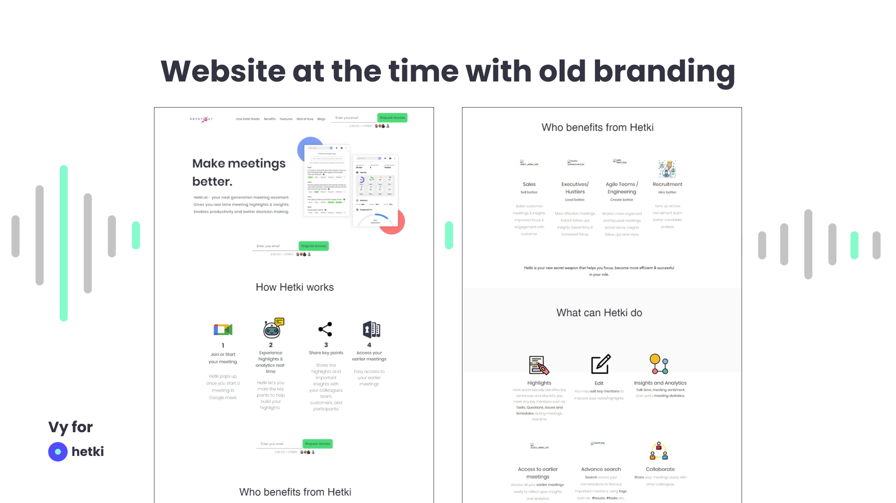

Vy for Hetki.ai
Navigating Competitive AI Landscape with Design
Market and Competitor Research
Product Design
User Research
UX Design
UI Design
Problem Description:
Hetki.ai, a new Finnish startup, wanted to have an overhaul of their digital presence and improve product design to prepare for the upcoming relaunch after pivoting their B2B product.
Information was omitted and modified due to NDA.
Context
About Hetki.ai
A Finnish startup offering an AI-powered tool that analyze conversations between front-facing professionals and customers

Audience
Customer-facing roles (sales reps, customer success reps, etc)
Challenges
Pivoting
Pivoting amidst AI exponential growth
New Hire Designer
A lot to catch up with the current product and its future path after pivoting
Process Overview:
To overcome the previously mentioned challenges, the team adopted the Design Thinking process with certain modifications to meet its needs and serve its current Agile team as follow:
Design Thinking
*
Agile Team
=
Hetki.ai's Product Design Process
Understanding
Understanding users and markets' demand for pivoting
Define
Defining the needed works to be done on the design-front of the product
Design
Designing the product and scaling Hetki.ai's design maturity
Build
Building the product iteratively alongside Design
Test
Testing the product with external and internal users
1. Understanding
As a new comer, I had a lot to catch up with in terms of the existing product, its users and the company's response to market's demand with a pivot. Before starting any design work, I spent time discussing with the Founder cum Product Manager to understand the rationale and the need for pivoting.
To further internalize my understanding of the product and the pivot, I conducted desk research on existing competitors and where Hetki.ai's identity was standing at the time. A competitor market positioning overview done as part of the market research to identify opportunities for Hetki.ai on the market.
I also reviewed past reports on existing users’ feedback and research to understand users' perception and feedback on the products.

2. Define
After evaluating the existing website and branding, the team believed that a new branding identity was necessary for Hetki.ai to appeal to their target market segment. Because Hetki.ai at the time was not a public product and was only used by a selected number of early adopters, it was an appropriate time to make large change in identity before the product's upcoming relaunch of the pivot to the public.
Old branding and UI:
(Capture retrieved from waybackmachine.org)
3, 4, 5. Design, Build, Test
The three stages mentioned does not happen seperately but highly connected with back-and-forth iterations between the stages.
Design + Build Collaboration Strategies
Tool kit


Principles
Agile Team
Synchronous and Asynchronous communication
Frequent and short feedback loop
Testing Strategies
Competitors
UX/UI designer (me) reviews competitor products and identify their strength and weaknesses
External Users
Due to time difference with users, the PM conducts interviews and usability studies. UX/UI designer (me) reviews the scripts and reports to produce action plans.
Internal Users
As internal sales reps also use the tool, UX/UI designer and PM both conducts interviews with internal users.
Deliverables:
New Branding:
The new branding includes a new color scheme, typography, logo, motifs and other design components that can be used across various facets of Hetki.ai as a company and product.
Implementation of New Branding: